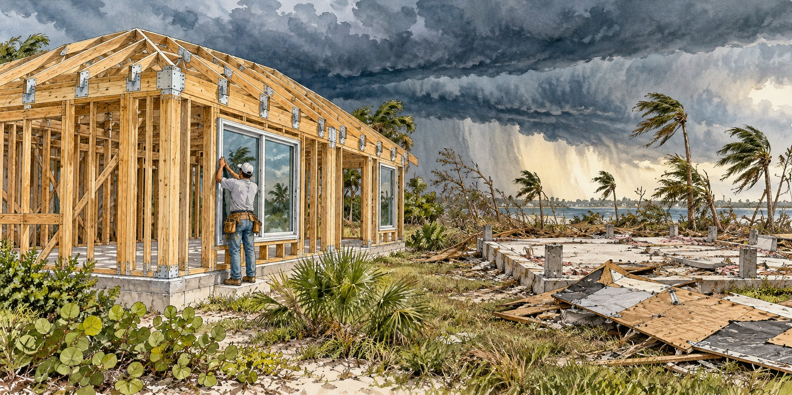

Building for the Wind
How Hurricane Andrew Rewrote the Way Florida Builds Its Homes

In the planned neighborhood of Country Walk, north of Homestead, investigators picking through Hurricane Andrew’s wreckage in 1992 found why many homes had failed in the storm. The roofs of many destroyed homes had not been nailed to their trusses. They had been stapled, a faster, cheaper shortcut that held fine under ordinary conditions and failed completely in winds above 165 miles per hour. Over the next three decades Florida rebuilt its rules, and later hurricanes provided tests of the stronger standards.
A Patchwork of Local Codes
Florida had adopted a statewide minimum building code as early as 1974, but it let each local government choose among model codes and amend and enforce its choice. By 1992 the state had no truly unified standard: more than four hundred locally written and enforced codes across sixty-seven counties and hundreds of municipalities. Rapid growth outran inspectors, and rigorous enforcement was widely seen as something that slowed construction and raised costs.
What the Grand Juries Found
After Andrew, two Miami-Dade grand juries examined the failures. A prosecutor later described a toxic trio behind the destruction: poor design, shoddy construction and inadequate inspection. Investigators found plywood roof sheathing attached with too few or too-weak nails, and trusses never properly braced. Unlicensed contractors flooded in for the rebuilding boom, and the grand jury reports found that many rebuilt roofs failed inspection.
Engineers also found a second failure mechanism: in many destroyed homes, a single broken window let wind inside, and the building’s own internal pressure tore it apart. The lesson was to protect a building’s openings: windows, doors and garage doors.
Miami-Dade Moves First
After Andrew, South Florida strengthened an existing building code and its product-testing and enforcement practices. These reforms helped shape the later High Velocity Hurricane Zone provisions for Miami-Dade and Broward. Protecting windows, doors and other openings became central to resisting wind-borne debris.
One Code for the Whole State
The Florida Building Codes Study Commission began in 1996 to design a unified statewide standard, built on simplicity, uniformity, flexibility, affordability and innovation. Florida authorized a statewide code in 1998, and the first Florida Building Code took effect on March 1, 2002, replacing the patchwork with one standard. It required licensed inspectors, third-party testing of products and a wind-borne debris region requiring opening protection across large parts of the state.
The Real-World Test
The 2004 hurricane season, followed by Wilma in 2005, offered a large-scale test. Engineering investigations found that newer homes built under stronger standards generally resisted wind damage better. Age alone does not determine a building’s performance: construction quality, maintenance, retrofits and the storm’s local wind and flood conditions also matter.
Punta Gorda Rebuilds, Twice
Charley leveled large parts of Punta Gorda in 2004, including the original Charlotte High School. The city rebuilt under the statewide code under stronger construction and enforcement practices. Bar owner Kevin Doyle, who spent seven years rebuilding, said, “When we rebuilt, we went over the codes with everything. It’s like a fortress now.”
When Hurricane Ian crossed almost the same coast eighteen years after Charley, the rebuilt high school suffered little structural damage; a plaque there reads, “Never again will the winds be feared, never again.” Contractor Joe Schortz said, “Everything with a 2007 code and beyond pretty much was fine.” An analytics firm, CoreLogic, found wind insurance losses in one hard-hit county roughly doubled for structures built before 1996. Governor Ron DeSantis summed it up: “If you built to code with new construction, you can withstand hurricanes in Florida.”
Quick Facts
| Before Andrew | 400+ locally written codes; no single statewide standard |
|---|---|
| Andrew winds | More than 165 mph sustained at landfall |
| Documented shortcut | Staples instead of nails on roofs at Country Walk |
| 1994 | South Florida strengthened building requirements after Andrew |
| Design wind speed | Requirements vary by location, exposure and code edition |
| 2002 | Florida Building Code took effect March 1, 2002 |
| 2005 UF study | Newer-code homes had less damage in the 2004 storms |
| 2022 echo | Ian renewed attention to building performance and storm surge |
Did You Know?
Many homes failed because one broken window let wind pressure build inside.
Charlotte High School, leveled by Charley, was rebuilt and survived Ian.
Miami-Dade created a new inspector job, product control, after Andrew.
Vocabulary
Building code: a legal set of minimum standards for how buildings must be built.
Wind-borne debris region: an area where windows and doors must resist flying objects.
Impact-resistant glazing: windows built to survive debris strikes in high winds.
Discussion Questions
Why did a single broken window matter so much to a home’s survival?
What evidence best shows that stricter codes work?
Related Articles
FLH-0007 — Hurricane Andrew (1992)
FLH-0008 — Hurricane Charley (2004)
FLH-0012 — Hurricane Ian (2022)
FLH-0014 — The Birth of Florida Emergency Management
Sources
The Seattle Times. “Hurricane Andrew Transformed Florida’s Building Codes.” seattletimes.com
Insurance Journal. “Fla. Building Codes, Revamped Since Andrew, Still Being Worked.” insurancejournal.com
ABC News. “25 Years Later: How Florida Buildings Are Better Able to Withstand Category 5 Storms.” abcnews.go.com
International Code Council. “Florida Case Study.” iccsafe.org
The Washington Post. “Why Many Homes and Buildings in Punta Gorda Still Stand, Even After Ian.”
ABC News. “Hurricane Ian’s Path Echoes Destructive 2004 Hurricane Charley.” abcnews.com
Burns & Wilcox. “Post-Hurricane Assessments Reveal Importance of Florida Building Code Updates.”
FEMA. “The Role of Florida’s Building Codes in 2018 Hurricane Michael” and “House of Steel Survives Charley.” fema.gov
South Star Roofing; Armor Pro Windows & Doors; Sims Crane (industry blogs; see flags).
Florida Building Commission — Code history